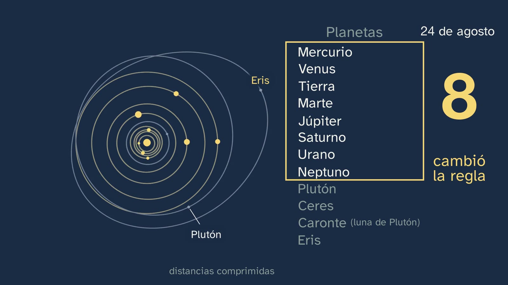
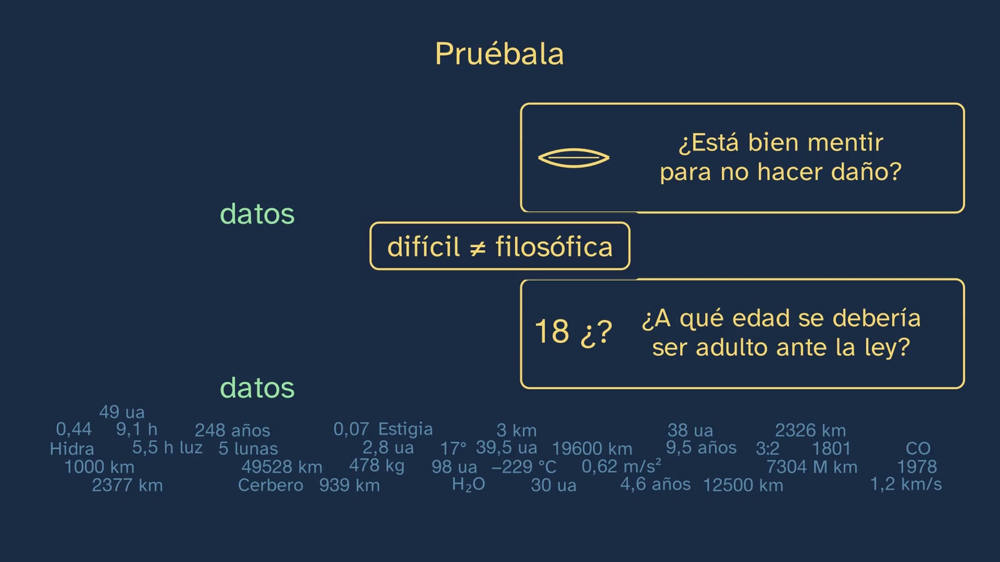
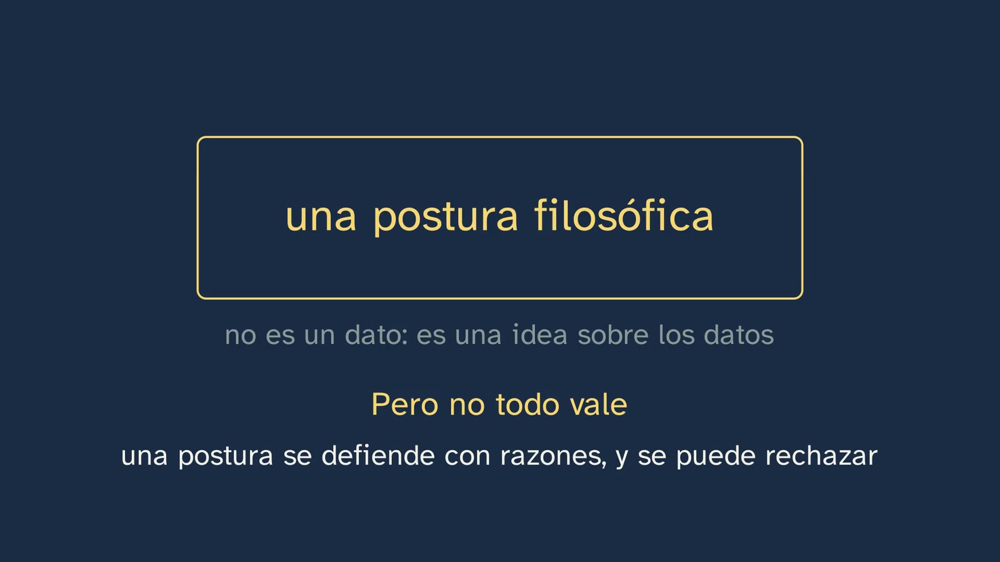
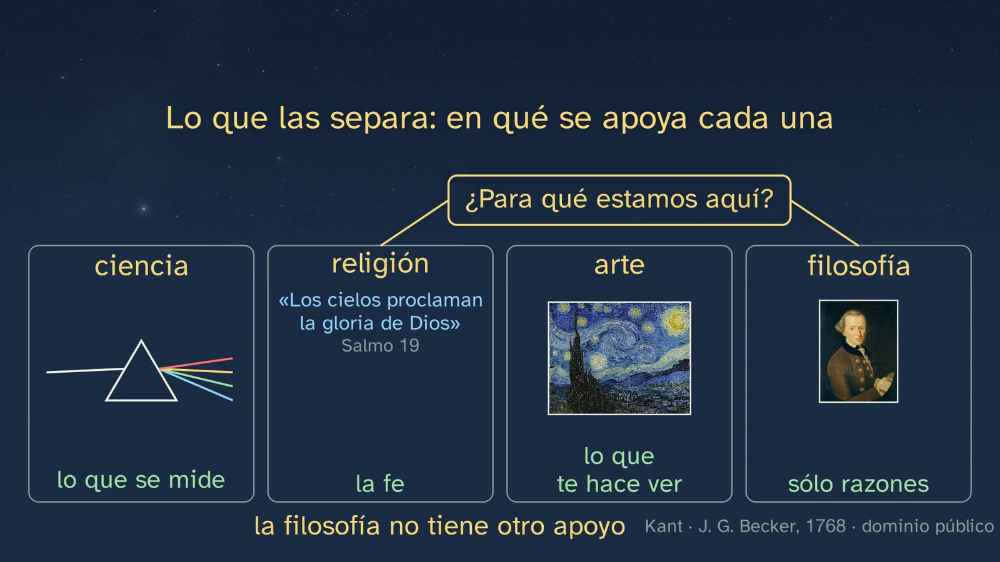
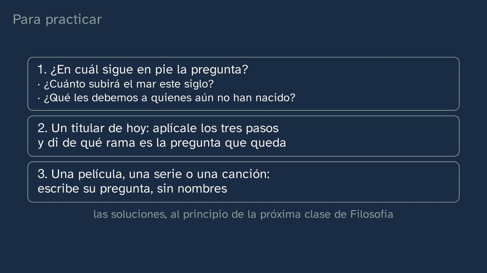
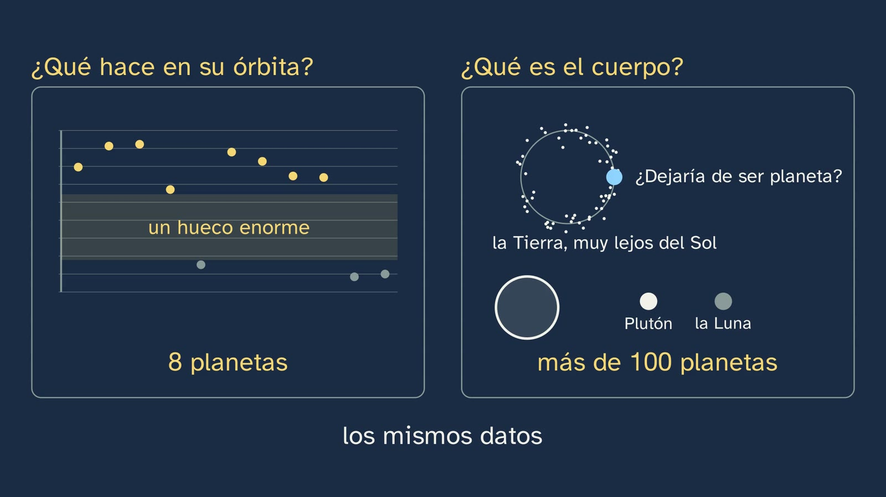
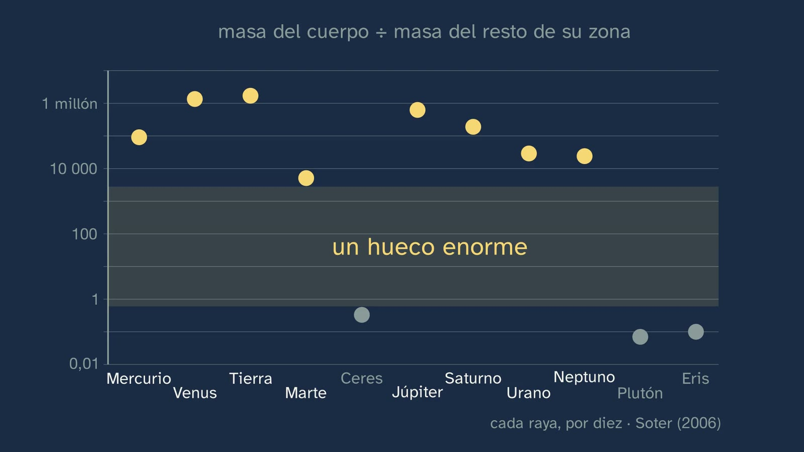
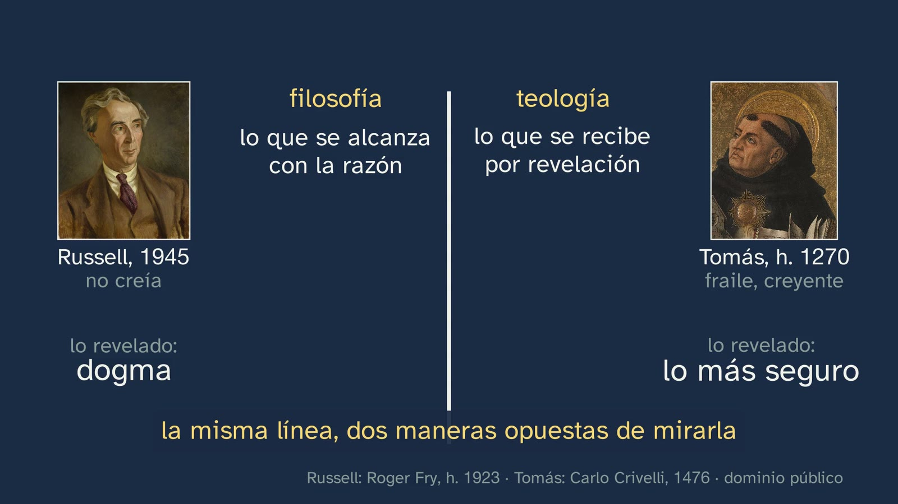
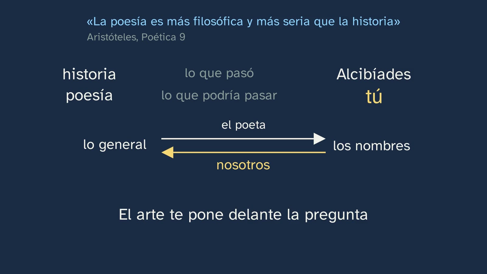

Where philosophical problems hide
In a nutshell
The class answers a double question: where do philosophical problems hide, and how are they told apart from those of science, religion or art? It starts with a real photo: Prague, 24 August 2006, hundreds of astronomers raise a yellow card and Pluto stops being a planet. What instrument would have settled the matter? Students predict, and the class answers in four steps:
- First, a case. On 16 August, one proposal gave twelve planets; on the 24th, the assembly approved another and the result was eight. In those eight days Pluto didn't change, and the Astronomical Union cited no new data: the rule changed. Then, New Horizons: in 2015, the same probe closed which is wider, Pluto or Eris, and did not close whether Pluto is a planet. Two questions, and only one ends.
- The nuance that makes the thesis honest. Just because something isn't measured doesn't mean it makes no difference. Plato asks us to cut at the natural joints, and there are two reasoned cuts, with the same data. With Pluto, in part, it's a word: that's why it could be put to a vote. But underneath there remains a question that can't be voted on: those borders, are they set by nature, or by us? And sometimes there's a lot at stake: death, in class 4.
- The rule. A practical test, the channel's own: imagine you already have all the data; if the question still stands and there are reasons that carry weight, a philosophical problem may be hiding there. Difficult doesn't mean philosophical; driving on the right still stands, and it's a convention; and «if you can't measure it, it's opinion» doesn't pass its own rule.
- The distinction and the method. What separates philosophy from science, religion and art isn't the topic, but what each one rests on: what is measured, faith, what it makes you see, or only reasons. Russell puts it in a no man's land, Thomas Aquinas draws a line in the same place and values it the other way round, and Gould and Dawkins argue about where it runs. And you hunt in three steps, applied to a news story (the Australian law on social networks and under-16s, with Mill) and to a film (The Truman Show, with Aristotle): set aside the data questions, imagine you already have all the data and remove the names.
Aim. By the end, students will be able to tell philosophy apart from science, religion and art, and to uncover the philosophical question hidden in a news story, a film or a scientific advance.
The test is a tool for starting to think, not a definition of philosophy. The class says so («it's not a law, it's a rule of thumb», 8:31), and this sheet gives its limits (see «To go further»). The class ends with those limits turned into the open question: when a question still stands with all the data, is it very deep, or is it badly put?
The words.
- All-the-data test. The channel's name and rule: it doesn't come from any author. It has relatives (Moore, Wittgenstein), who are in «To go further».
- Data question. One that ends when you have the data, however extremely difficult it may be. The class doesn't say «scientific question», because «where did I leave my keys?» also ends with a piece of data, and it isn't science.
- Convention. What it's enough to agree on, because it makes no difference which is chosen. «Driving on the right» is the class's example, and also that of the Stanford Encyclopedia («Convention»).
- Dwarf planet. Another category, not a kind of planet: the Union's press release speaks of «two distinct classes of objects», and the resolution that made them a subtype lost.
- Theology and what is revealed. The class says «what, according to faith, God has revealed» (2:01), like class 2. «Dogma» only comes up in Russell's mouth (13:48 and 14:57).
- Poetry. For Aristotle, works of fiction, such as tragedies: not verse. The class makes this clear (20:28).
- Position. The word from class 1: an opinion is something you have; a position is something you defend, with reasons.
- Natural kinds. The technical name of what the class calls «joints». It doesn't come up in the voice.
Curriculum
Royal Decree 243/2022, Philosophy (consolidated text in the BOE; our working copy is identical, checked for the topic sheet). The knowledge is from block A, «Philosophy and the human being», section 1, «Philosophical reflection on philosophy itself». The minutes are those of the video.
| Element | What the decree says | Where it is worked on |
|---|---|---|
| Basic knowledge (block A.1) | «Philosophy in relation to other fields of knowledge and human activity.» | The whole class: with science (2:09 to 8:30), with religion and art (11:22 to 13:26), and where the border runs (13:26 to 16:03) |
| Basic knowledge (block A.1) | «Basic methods and tools of the philosopher: […] the identification of philosophical problems in other spheres of culture; argumentative thought and dialogue […]» | The test (8:30), the three steps (16:03), the news story (16:21) and the film (18:26) |
| Specific competence 1 | «To identify problems and formulate questions about the foundation, value and meaning of reality and of human existence, through the analysis and interpretation of texts and other forms of philosophical and cultural expression, in order to recognise the radical nature and transcendence of such questions […]» | An astronomical resolution, a law and a film, turned into questions. Exercises 2 and 3 and the activity |
| Specific competence 6 | «To understand the main philosophical ideas and theories of the most important thinkers, men and women, through the critical and dialectical examination of them and of the fundamental problems they respond to […]» | Plato (6:03), Kant (12:09), Russell (13:26), Thomas Aquinas (1:45 and 14:33), Gould and Dawkins (15:17), Mill (17:26) and Aristotle (20:24), each with their text; and Kant again (What Is Enlightenment?, 20:07) |
| Specific competence 7 | «To acquire a global, systemic and transdisciplinary perspective in approaching fundamental and current questions, analysing and categorising their multiple aspects, distinguishing what is most substantial from what is incidental and integrating information and ideas from different disciplinary fields from the fundamental perspective of philosophy […]» | «Distinguishing what is most substantial from what is incidental» is the third step, removing the names (17:11). The data are needed, but they aren't enough (9:59) |
| Criterion 1.1 | «To recognise the radical nature and transcendence of philosophical problems through their recognition, analysis and reformulation in texts and other means of expression, whether philosophical, literary, historical, scientific, artistic or relating to any other cultural sphere.» | «Reformulation» is what the three steps do: a news story (16:52 to 17:11) and a film (19:00). Scientific means (resolution B5, 3:37), artistic means (Van Gogh, 12:01) and religious means (the psalm, 11:46) |
| Criterion 6.1 | «To become aware of the richness and influence of philosophical thought by identifying and analysing the main philosophical ideas and theories in texts or documents from diverse cultural spheres, as well as by relating them to common and current experiences, actions or events.» | The photo of the vote (2:09), the Australian law, with its real page (16:21), and Mill set against it (17:26). Plato and Aristotle, set against Pluto and a film |
| Criterion 7.1 | «To tackle complex questions and problems of a fundamental and current nature in an interdisciplinary, systematic and creative way, using concepts, ideas and procedures from different fields of knowledge and orienting and articulating them critically from a philosophical perspective.» | Pluto, with real data on orbits and masses; the border of death (8:04); the brain and adulthood (9:43); social networks and minors (16:21) |
The decree's method. It asks for teaching that is «largely dialogical», not «a mere programmatic exposition of topics and questions», but «a real experience of discovering philosophical questions» (introduction to the subject). That's why the class doesn't compare four definitions: it poses a case, lets students get their prediction wrong, and gives them a tool they can repeat on their own. The description of competence 7 says almost the same as the class about data: for eco-social problems, it asks for an analysis in which «scientific data and explanations are integrated together with philosophical conceptions».
The depth of year 1. It's a first view. The relationship with science and with the other kinds of knowledge comes back in depth in topic 6, with two pieces of knowledge from block B.1: «Scientific knowledge: definition, demarcation and scientific methodologies. The philosophy of science: nature, problems and limits of scientific knowledge» and «Other ways of knowing: the problem of metaphysical knowledge; religious beliefs; poetic reason; common knowledge».
What students need to bring.
- From class 1: an opinion is something you have; a position is something you defend, with reasons (picked up at 11:06); and Russell, with the sciences that leave.
- From class 2, the one with the table: Thomas Aquinas' border between reason and what is revealed, and his «a border doesn't mean war». It's the retrieval question (1:45) and it comes back at 14:33.
- From class 3: why faith and reason clashed or didn't in the Middle Ages.
- From class 4: the branches (exercise 2 asks for them) and bioethics: ventilators and the Harvard committee (8:04).
- From lower secondary (ESO): telling an opinion from a piece of data. It's the only thing taken for granted, because many students start from scratch here (topic sheet).
What the regions add (contrast only, read in their official gazettes):
| Region and regulation | What it adds | Where the class covers it |
|---|---|---|
| Andalusia · Order of 30 May 2023, BOJA no. 104, 02/06/2023 | «The interdisciplinary nature of Philosophy. Science and Philosophy. Codes of professional ethics.» And a new criterion, 7.2: «To understand the relationships between Philosophy and other ways of knowing, especially scientific knowledge, as well as their mutual influences and interactions, and to use this knowledge to analyse complex current problems and to reject pseudoscientific and irrational attitudes.» | Science and philosophy, in the whole Pluto part; the sentence «if you can't measure it, it's opinion» (10:30). Pseudoscience and the codes, in the table below |
| Castile and León · Decree 40/2022, BOCYL no. 190, 30/09/2022 | «Philosophy as a theory of rationality», next to this knowledge; and criterion 1.2: «To identify the different means of cultural expression, discovering in them topics for philosophical reflection and debate» | «What each one rests on» (12:48); the hunt in a film (18:26) and exercise 3 |
| Galicia · Decree 157/2022, DOG no. 183, 26/09/2022 | «Comparison with other fields of knowledge: mythology, religion, science, common knowledge, poetic reason» (in Galician in the original). And criterion CA1.5: philosophy as knowledge that is «fundamental, critical and universal, distinguishing it from other kinds of knowledge and human activities» | Religion and science, here. The others, in the table below |
| Madrid · Decree 64/2022, BOCM no. 176, 26/07/2022 | «The interdisciplinary nature of philosophy. Science and philosophy. Codes of professional ethics.» | Like Andalusia |
What teachers may miss, and where it is. The class stays with science, religion and art, which are the ones its aim names. The rest of this knowledge has a place on the channel:
| Content | Who asks for it | Where it is |
|---|---|---|
| Myth | Galicia; the textbooks, with the move from myth to logos | Class 3: how philosophy was born and why «from myth to logos» is a disputed interpretation |
| Common knowledge | The decree (B.1); Galicia | Topic 6, class 5, «Beyond science: metaphysics, faith, poetry and common sense». Here it only peeks out: «where did I leave my keys?» is a data question |
| Poetic reason | The decree (B.1); Galicia | Class 2 (Zambrano) and topic 6, class 5 |
| Pseudoscience | Andalusia, criterion 7.2 | Topic 6, class 1, «What makes something science?». A pointer for today, which is our own reading: a pseudoscience makes data claims, and those end with data; sounding deep doesn't make it philosophical |
| Codes of professional ethics | Andalusia and Madrid, in this knowledge | Topic 9, class 6, «Ethics comes down to the street». It's where lower secondary groups them (Royal Decree 217/2022: «Codes of professional ethics. Applied ethics»). The Bachillerato decree doesn't ask for them in any block, and none of the textbooks we looked at includes them |
Where the textbooks cover it. Of the twelve Spanish textbook projects we compared, with their unit 1 at hand, nine compare philosophy with the other kinds of knowledge, and almost all include cinema and a debate. None includes codes of professional ethics. The comparison is usually a list; what this class adds is a real case, a rule that can be applied and a three-step method.
How the class is built
Video chapters
Almost twenty-three minutes (22:50), in eleven chapters. Javier appears on camera four times: when he says hello (0:00), with the hook (0:17), halfway (11:15) and when he says goodbye (22:38). The thread is a rain of data: it falls on the questions, dissolves some and leaves others standing. It falls for the first time on Pluto, in front of the haze (4:53), and comes back in the test (8:30), in the convention (10:04), in Gould (15:46), in the news story (16:52) and in the open question (22:14). And one gesture, a stroke looking for its place, is repeated three times: the frame of the planets (3:04), the dashed line that moves from «planet | dwarf planet» to death (7:45 to 8:20) and the little mark of the ages (17:45). Three words, three borders.
| Chapter | What happens | Why |
|---|---|---|
| What we'll see (0:00) | Javier says hello; the topic map, with the fifth class boxed (0:04). Hook to camera (0:17): in Prague, in 2006, hundreds of astronomers raised a yellow card, and the solar system lost a planet. What had changed? | A question with its who, its when and its where. |
| Solutions to the previous class (0:27) | All three, each with its exercise: a coin from which three threads run to three branches (0:27); the secret, the table and the star, which fly to their box (1:02); and the four questions on the timeline with their branch, and the one on faith and reason, with three threads (1:22). Retrieval (1:45): Thomas Aquinas' line, from the class with the table. It's drawn in chalk (2:01). | Spaced practice. The line at 2:01 is a hook: it comes back at 14:33. |
| Pluto: measured or voted? (2:09) | The real photo of the vote, with its zoom to the cards and to the screen on stage (2:09). The solar system in motion, with real orbits (2:30); Eris is born (2:39). Predict (2:49; countdown at 2:58): what instrument would settle it? Two dates: the frame of the list stretches to twelve and shrinks to eight, without any body disappearing or stopping moving (3:04); «what changed was the rule» (3:33). The three conditions (3:37) and what clearing an orbit is (3:50); the view opens onto the real JPL belt, thousands of dots (4:03); «dwarf planet ≠ planet» (4:15). The probe (4:23), bound for a planet that stopped being one. Hubble and New Horizons (4:41); the haze fades and the rain of data begins (4:53). A calliper measures the two circles: 2,377 and 2,326 km (4:57); Stern (5:09). The other question doesn't close (5:19). «Two questions, the same probe» (5:36), and the prediction is closed (5:56). | What moves is the rule, and the bodies go on about their business: students see it without anyone saying so. The probe is the all-the-data test before it has a name. |
| Carving at the joints (6:03) | «PLUTÓN» loses a letter and becomes «PLATÓN» (Pluto, Plato). The quotation from the Phaedrus, typed out; a labelled chicken leg, «at the joint» and «breaking the bone»; «does nature set it?, or do we set it?» (6:25). Soter's graph, with each mark times ten (6:43), and the gap (6:58). The other answer (7:02): what a thing is shouldn't depend on where it is; «the Earth, very far from the Sun» (7:09); «more than 100 planets», with the Moon. Two sibling cards, the first with the graph in small, without labels, and «the same data». «Classifying is the work of science» (7:39). «Only a word» (7:45): with Pluto, in part, yes; the question that can't be voted on (7:53); and the same dashed line moves from «planet | dwarf planet» to death, with the beating heart, the damaged brain and «Harvard, 1968» (8:04 to 8:20). |
| The all-the-data test (8:30) | «A test: a rule of thumb, not a law» (8:31). The rain on Pluto's two questions: one dissolves, «it was about data»; the other holds up, «it may be hiding there» (8:37). Stop and think with four cards, each with its drawing (8:54; 9:11; countdown at 9:17). The rain on each one: «difficult ≠ philosophical» (9:27). The brain and adulthood, with a gap in the middle, «how much maturity is needed?»: the data are needed, but they aren't enough (9:43 to 9:59). The warning (10:04): driving still stands, but in grey; «a convention» (10:22); «and what's more, there are reasons that carry weight» is added (10:23). | The rule, with its counterexample said by the class itself before a student says it. |
| «If you can't measure it, it's opinion» (10:30) | The sentence, like a stamp. Stop and think (10:38; countdown at 10:44): with what instrument do you measure it? With none (10:49): it's flipped over and you see the back, «philosophical position». «That doesn't mean anything goes» (11:06). Javier, halfway (11:15): the key point so far. | The direct objection to the test, taken apart with its own rule. |
| One sky, four ways of looking (11:22) | A twinkling sky and four cards, under «what does it rest on?». Cecilia Payne and light in a prism (11:35); the psalm (11:46); The Starry Night, by Van Gogh, almost full screen, with its swirls in motion (12:01); Kant, with the sky behind him (12:09): «before so many worlds, his importance, so to speak, annihilated» (12:18) and «the moral law raises his worth» (12:29); and his reason (12:30). «What separates them» (12:48): the philosophy card gains «only reasons» as it's said; «almost everyone reasons» (13:07) and «philosophy has no other support» (13:12); and «what we're here for» takes its place between religion and philosophy (13:17). | Four sibling cards, with the same weight. The shared question keeps them from being read as four drawers. |
| No man's land (13:26) | A map, «imagine two trenches» (13:38): science, theology and, in between, the empty strip. Russell's two arrows (14:03). The border moves (14:16): what the stars are made of crosses to science, and «what ought I to do?» holds up under the rain (14:27). Russell and Aquinas, at the sides, with the line in the centre and, above it, «philosophy | theology» (14:33): «what is revealed: dogma» (14:57) and «what is revealed: the surest thing» (15:00), in the same colour; and the trench is erased on Aquinas' side (15:10). Two circles that separate and overlap: «Gould, 1997: two domains that don't overlap» (15:22); «Dawkins: it isn't so clean» (15:35), with a shared zone, «facts»; and the theologians (15:43), «in part». The test, again (15:46). |
| The hunt: a news story (16:03) | The three steps, on cards that stay in a corner: «1 · set aside the data ones», «2 · imagine all the data» and «3 · remove the names» (16:03). The Australian law, with its real page, «must take reasonable steps», and the fine, for the company (16:21). Step one, with the heading «Set aside the data questions» (16:39), step two (16:52) and step three (17:11): «Australia», «fifteen years» and «network» are crossed out, and what's left is rearranged. Mill (17:26), with two quotations, the one on harm and «Over himself […], the individual is sovereign» (17:39), and «his own good is not enough», without quotation marks. The sentence about young people, in full (17:45), and an age ruler with a little mark that moves. At what age are you your own master? (17:56). Two arguments per side (17:58 and 18:12), «those who defend them» and «those who criticise them», in the same colour, and a gap in the centre: «your position, with reasons» (18:20). The little mark ends up around 16.5 only because it has to stop somewhere: it isn't an answer. | A tool that can be repeated with tomorrow's headline. Mill serves first one side and then the other. No verdict. |
| The hunt: a film (18:26) | Chalk drawings by the channel, with no image from the film. A little house under a dome (18:26); the boat crashes into the sky (18:41); what the show's creator says to him (18:50). Only the third step is left (19:00): the starting question is «Should Truman leave television and live a true life, with fear?»; «Truman» and «television» are crossed out, and what's left is: is a true life, with fear, worth more than a false and safe one? (19:12). Silence: everything goes and the question stays alone, in large letters; the voice rereads it in halves (19:20). «Truman doesn't exist. And that's exactly why it's about you» (19:29): the door and the set, in the same colour, «a truth that frightens» and «a lie that doesn't hurt», and «What do you think? With what reasons?», with a countdown (19:54). Then, an open cage and a bird that doesn't leave (20:00): Kant, «It is so comfortable to be a minor», and Erich Fromm's title, Escape from Freedom (1941; in Britain, The Fear of Freedom). Aristotle (20:28), with his imagined portrait, by Hayez: the quotation from the Poetics, above; a table in columns, and two arrows between «the general» and «the names»; «we take the opposite path» (20:53). Recap (21:04), with the hiding places, the four cards and the three steps. | The same gesture as with the news story, faster. The «opposite path» gives the method a classical foundation. |
| Practice and keep thinking (21:38) | Three exercises, each on its card. The open question (22:14; countdown at 22:24), with the endless rain of data. Class 6 (22:29). Goodbye (22:38): with all the data, see which question still stands, and whether there are reasons that carry weight. | The solutions open class 6. |


A plan for a 50-minute lesson
Designed so that the activity comes when students have already seen the hunt in the news story, and before the film. The video is long: if there are two lessons, see below.
| Minutes | What happens |
|---|---|
| 0–2 | No video: «Before you start», on the worksheet. A question science will never be able to answer, and two sentences. |
| 2–10 | Video from 0:00 to 8:30 (if the solutions to class 4 have already been corrected, skip from 0:27 to 2:09). Stop at 2:54: the prediction, in writing. It's picked up at 5:56. |
| 10–14 | Video from 8:30 to 11:22. The table of the test is filled in at 9:17, before seeing the answer. Stop at 10:40: one minute in pairs, «with what instrument do you measure it?». |
| 14–19 | Video from 11:22 to 16:03. The table of the four ways of looking, as it goes. |
| 19–22 | Video from 16:03 to 18:22: the hunt in the news story. |
| 22–37 | The activity: the hunt (below). |
| 37–40 | Video from 18:26 to 20:29: the film. |
| 40–45 | Video from 21:38 to the end (22:50). The open question, aloud or in the philosophical journal. |
| 45–50 | «At the end of the class», on the worksheet: does your question still stand? The exercises, for homework. |
If there are two lessons, cut it in half at 11:15, with Javier on camera. The second lesson starts with the test applied to a new question, and leaves more time for the activity and for the debate on the news story.
If time is short, the whole video, with its stops (about 27 minutes), and a quick hunt with a single headline, all together, on the board (10 minutes).
If the debate on the news story catches fire, it's worth taking it to the question without names, not to the case. The teacher moderates and doesn't give a verdict.
Typical mistakes and how they are handled
These are frequent confusions the design anticipates; as far as we know, there is no didactic research on them as solid as there is in the sciences. Several were repeated in a review of widely watched popular videos, made to prepare the class.
- «It's philosophical because it's difficult.» This is the test's first mistake (9:27). The one about the stars is extremely difficult, and with all the data it ends. It has some truth: many philosophical questions are difficult. But what distinguishes them is that they don't end with data, not that they're hard.
- «It's only a word.» The class half agrees (7:45): with Pluto, in part, yes, and that's why it could be put to a vote. But underneath there's a question that can't be voted on, and with the word «death» you see what's at stake. In the classroom it's worth separating the three levels (see «To go further»): what name we use, which classification is better, and whether those borders are set by nature.
- «If you can't measure it, it's pure opinion.» This is the mistake the class takes apart with its own rule (10:38): that sentence can't be measured with any instrument. And it adds what avoids the opposite mistake: that doesn't mean anything goes (11:06). Careful: the class attacks a slogan, without attributing it to anyone. It isn't what the logical positivists said (see «To go further»).
- «Data play no part: a vote decided Pluto.» That's true only of those eight days. The data opened the problem: resolution B5 itself says «Recent discoveries lead us to create a new definition». From 1992 objects beyond Neptune kept appearing, and in 2005, Eris. That's why the class says «the data opened the problem, but didn't close it» (5:40), and «the Astronomical Union cited no new data» (3:30), not «there wasn't any»: it's an absence in the documents, not a proof.
- «424 astronomers voted on the definition.» Several widely watched videos repeat it. The definition wasn't counted: it passed «with a great majority». What was counted was the resolution on Pluto: 237 in favour and 157 against. The class says «hundreds» (0:17). See «To go further».
- «A dwarf planet is a kind of planet.» No: it's another category (4:15). That's why the class says so even though it sounds odd.
- «Science gives facts and philosophy, opinions», or «here philosophy beats science». It's a false fight. Classifying is the work of science, and both sides of the argument are scientists (7:39). The class doesn't set science against philosophy: it shows two kinds of question before the same probe.
- «Religion believes and philosophy reasons.» This is the caricature the class avoids: it doesn't say what each one does, but what it ultimately rests on. «Almost everyone reasons. Thomas Aquinas reasons, and a lot» (13:07). That's why «what we're here for» can be answered by religion and by philosophy, each with its own support (13:17). Anyone who asks whether religion is irrational has misunderstood the class, and it's worth saying so.
- «Philosophy is the only one that uses only reasons.» Mathematics and logic don't measure either, and they too rest only on reasons. What the class says about science (12:48) holds for the sciences that observe. It's a real limit of the four cards (see «To go further»).
- «Russell defines philosophy.» It's a proposal of his, and he says so: «as I shall understand the word». The class marks it («for him», 13:41). And there's a tension an attentive student may point out. For Russell, no man's land holds what isn't yet definitely known; that's why «what the stars are made of» could be there. But, according to the test, that was always a data question, and «difficult doesn't mean philosophical». They are two different ideas of what is philosophical. The class separates them with just a few words: «others, according to our test» (14:27). It's a good discussion, not an oversight to be covered up.
- «Thomas Aquinas and Russell say the same thing», or «Aquinas sets science against faith». They agree on where they draw the border: according to where the knowledge comes from. But for Aquinas sacred doctrine is a science, and his «philosophical disciplines» include what is science today. Nor is he in no man's land: for him, reason and faith touch without clashing («there are no trenches», 15:10). And it isn't wise to make him a defender of the autonomy of philosophy: reason, he says, serves faith (Summa Theologiae I, q. 1, a. 8, ad 2; class 2).
- «Gould proposed a truce: that science and religion shouldn't talk to each other.» Neither truce nor silence. Gould writes «No such conflict should exist», and that his proposal is «a principled position […], not a mere diplomatic stance». And he says the two domains touch at a border «interdigitating in wondrously complex ways», with intense dialogue. That's why the class says he «proposed that they don't [clash]» (15:22).
- «Australia has banned social networks for minors.» What the law requires is something else: platforms «must take reasonable steps» to prevent under-16s from having an account. The fine is for the company, never for the minor or their family (16:21). Several platforms can be viewed without an account.
- «Mill would be against this law», or in favour. Mill serves both sides. Those who defend the law say that minors are his exception (17:45). Those who criticise it reply that there are young people with mature faculties before the legal age, and that Mill doesn't say the state replaces the family. This last point is a reading, not a quotation. And his age is that of legal majority, not a cut-off at 16.
- «Removing the names means speaking in general terms.» The third step doesn't consist in saying something vague. What's left has to be a question that works for other cases, and that is still the same question. «What is good?» is removing too much. The proof that it has worked: you can put other names on it.
- «Aristotle advises removing the names», or «Aristotle looks down on history». The advice is for the writer: start with the general and put in the names afterwards (Poetics 17, 1455b12–13). Removing them is our own idea, and the class says so: «we» (20:53). And what he claims is that poetry speaks more of the general, not that history is worthless.
- «Kant's sentence is on his gravestone.» No. It's on plaques, one of them near his tomb. And it's the end of a book, the «Conclusion» of the Critique of Practical Reason, not a stand-alone sentence.
- «A minor, in Kant, means being under eighteen.» No. Kant's minority isn't about years: it's not daring to use your own understanding without someone else guiding you, and there are adults who live that way. That's why the class defines it before quoting it (20:07). And Fromm doesn't appear as a philosopher, but as a psychoanalyst: the question is philosophical even if someone from another profession asks it, which is what the class teaches.




Questions and solutions
In the video
- For Thomas Aquinas, how does philosophy differ from theology? (1:45; no countdown, and the answer at 2:01). Philosophy inquires with human reason; theology starts from what, according to faith, God has revealed (Summa Theologiae I, q. 1, a. 1). What will come up: «theology talks about God and philosophy doesn't». Aquinas admits a theology that is part of philosophy (a. 1, ad 2): what separates the two isn't the topic, but where what is known comes from. That's the class's idea, in preview.
- Predict: to find out whether Pluto is a planet, what instrument would settle it? A better telescope? A probe that goes all the way there? (2:49; the pause, at 2:58). Any reasoned answer is fine. The class's answer arrives at 5:52: no instrument settles it. It's worth valuing anyone who distinguishes what Pluto is like from what a planet is. What will come up: «a probe». It's a good answer to the question of which is wider, and the class shows this.
- Is the limit of the word planet set by nature, like a joint? Or do we set it ourselves, with one chop? (6:25; no countdown). The class gives two cuts and doesn't choose. The orbit cut has in its favour a huge, real gap (6:58); the cut by the body itself, that what something is shouldn't depend on where it is (7:02). A third answer, which doesn't appear in the video: both cuts are real, and what we choose is which one interests us (see «To go further»).
- Stop and think: how many stars does the Milky Way have? Is it right to lie so as not to do harm? How does the brain change between the ages of 16 and 20? At what age should someone be an adult in the eyes of the law? In which does the question still stand? (8:54; the pause, at 9:17; it's worth pausing). The ones about the stars and the brain end with data; the ones about lying and being an adult still stand. What will come up: putting the stars among the philosophical ones, because it's very difficult; and putting the brain with the question about age, because they look alike. They look alike because the first helps to think about the second: the data are needed, but they aren't enough (9:59).
- Stop and think: apply its own rule to it. With what instrument do you measure that sentence? (10:38; the pause, at 10:44). With none. By its own rule, it would be pure opinion. It isn't data: it's an idea about data, a philosophical position, and a debatable one.
- Do science and religion clash? Apply the test: with all the data, does it still stand? (15:17 and 15:46; no countdown). Yes, and there are reasons that carry weight: no experiment says where that border runs. Careful: Dawkins wouldn't fully accept this. For him, claiming that there is a universe with a supernatural presence is already a scientific claim. That this border is a philosophical problem is the class's conclusion, and it can be argued.
- Step two: does it end there? (16:52). No. Even if you know exactly whom they harm and whom they help, what's left is whether Australia has the right to stop a 15-year-old having an account on a social network, to protect them.
- At what age are you your own master? (17:56; no countdown). An open question: the teacher doesn't give a verdict. The class gives two arguments per side. A good answer says what someone would have to know or be able to do in order to decide for themselves, and whether that goes by age.
- Is a true life, with fear, worth more than a false and safe one? (19:12; countdown at 19:54). An open question. The class gives no verdict: the door and the set are the same size and the same colour. It's worth stopping here so that each student writes their position with a reason before going on. The class doesn't tell the end of the film, and there's no need to.
From the student worksheet
- Before you start. There's no right answer: it's their starting point. What's worth comparing at the end is the question they wrote with the test: did it end with data? And the two sentences with «what each one rests on».
- Why were the astronomers voting in Prague? What problem did Eris bring? A year earlier, a world beyond Pluto was announced, which seemed bigger than Pluto. If Pluto was a planet, so was Eris, and many more could follow. It had to be decided what a planet is.
- Twelve and eight. The proposal of 16 August gave twelve: the nine of the time, plus Ceres, Charon and Eris. The one approved on the 24th gave eight. The rule changed, after criticism from other astronomers; Pluto didn't change, and the Union cited no new data. For a high mark: that the data did open the problem.
- The three conditions. To orbit the Sun; to have enough mass for its own gravity to make it nearly round; and to have cleared the neighbourhood around its orbit. Pluto doesn't meet the third. Clearing means that its gravity rules that zone: everything else has fallen into it, been flung away or moves in step with it.
- The two questions of the probe. It closed which is wider, Pluto or Eris: Pluto, by very little, although Eris is heavier. It didn't close whether Pluto is a planet. The first question is what Pluto is like, and it's answered by measuring. The second is what a planet is, and no telescope measures that.
- Plato. He asks us to divide ideas at their natural joints, breaking nothing, unlike a bad butcher. The class takes this to the planets, and says so: Plato was talking about putting ideas in order. Is the limit of the word set by nature, or do we set it?
- The two cuts. One looks at what the body does in its orbit, whether it dominates its zone: eight planets, with a huge gap between them and the rest. The other looks at what the body itself is, whether it's big enough to make itself round without being a star: more than 100, the Moon included. One more piece of data won't make them agree because both look at the same data: they argue about which should count.
- In part, a word. With Pluto there's an element of convention, and that's why it could be put to a vote. Underneath remains the question of whether those borders are set by nature or by us. With death you see what's at stake: the machines gave the data, but they didn't say where to put the border, and what is done with a person depends on it.
- The table of the test. Stars: it ends; a data question. Lying: it still stands, there are reasons that carry weight; it may hide a philosophical problem. Brain: it ends; data. Being an adult: it still stands, there are reasons that carry weight. Driving: it still stands, there are no reasons that carry weight; a convention. For a high mark: that the exact age has something of a convention about it (the line has to be drawn somewhere), and that how much maturity is needed hasn't.
- Driving. It still stands because no data choose a side, but it makes no difference which is chosen, and it's enough to agree. That's why this is added: and there are reasons that carry weight.
- «If you can't measure it, it's pure opinion.» See above.
- The four ways of looking. Science: what the stars are made of; it rests on what is observed and measured. Religion: where everything comes from, and what we're here for; it rests on faith, on what its tradition holds to be revealed. Art: it doesn't explain, it makes you see; it rests on what it makes you see. Philosophy: what I am before all this, what I ought to do; it rests only on reasons. «Almost everyone reasons» because Thomas Aquinas reasons, and a lot: what is proper to philosophy is having no other support.
- No man's land. For Russell, between science, all that is definitely known, and theology, which for him is dogma, there is a strip exposed to attack from both sides: philosophy. It deals with what isn't yet definitely known, and it rests on reason, not on an authority. The border moves: what the stars are made of went unanswered for centuries, and today it's measured. For a high mark: that it's a proposal of his, and the tension in mistake 10.
- Russell and Aquinas. On one side, what is reached by reason; on the other, what is received by revelation. For Russell, what is revealed is dogma: it goes beyond what is known. For Aquinas, it's the surest thing: it comes from God, who is never wrong; and so faith and reason cannot clash.
- Gould and Dawkins. Gould: science and religion are two domains that don't overlap; to science, what the universe is like; to religion, meaning and moral value. Dawkins: it isn't so clean, because many religions assert facts, such as miracles. It's a philosophical problem because, with all the data, the question still stands and there are reasons that carry weight: no experiment says where that border runs.
- The hunt in the news story. Set aside: do social networks do harm at that age?, does the law work?, how many get around it? Still standing: does Australia have the right to stop a 15-year-old having an account on a social network, to protect them? Without names: how far can someone's freedom be limited in order to protect them?
- Mill. The only legitimate reason to use power against someone's will is to prevent harm to others. Over himself, the individual is sovereign, and his own good isn't enough. But he isn't speaking of children or of young people below the age the law may fix. The question gets sharper: at what age are you your own master?
- Two arguments. In favour: if everyone is in, leaving costs too much, and a common rule removes that pressure; and alcohol also has a legal age, even if some get around it. Against: a general ban doesn't look at each case; and for many isolated young people, social networks are a lifeline. What's marked is that the argument is well set out, not which side is chosen.
- The film. There's no data, because it's a fiction: all that's left is to remove the names. From «should Truman leave television and live a true life, with fear?» they are removed, and what's left is: is a true life, with fear, worth more than a false and safe one?
- Aristotle. History tells what Alcibiades, a politician from Athens, did; poetry, what someone like him would do. It speaks of the general, and that's why it's more philosophical. He advises the poet to start with the general and put in the names afterwards. We take the opposite path: we start from the names and remove them.
- For you. They have no solution: they're for thinking about, and can go into the philosophical journal. Better in writing: nobody has to say anything about their life aloud.
Practice (the solutions open class 6)
- In which does the question still stand? How much will the sea rise this century? What do we owe to those not yet born? The one about the sea is extremely difficult, but with all the data it ends: it's a data question. The one about what we owe to those not yet born still stands, and there are reasons that carry weight: knowing everything about the sea, what we ought to do remains. Criteria: saying why the first ends and why the second goes on, and that the second does make a difference. For a high mark: that the first helps to think about the second: the data are needed, but they aren't enough. What will come up: «the one about the sea is philosophical, because nobody knows»: difficult doesn't mean philosophical; and «the one about the sea depends on what we do», which is true and deserves a good discussion: what we do is also a piece of data, once it has happened.
-
Choose a headline from today, apply the three steps and say which branch the remaining question belongs to. There are many good answers. Two examples, with invented headlines:
- «A company sells a test that tells you at what age you'll fall ill.» Data: is it accurate?, how much does it cost? With all the data, it still stands: should I take that test, if it's always accurate? Without names: is it better to know something that can't be changed? Ethics; also theory of knowledge.
- «A machine wins a painting competition.» Data: how was it done?, did the jury notice? It still stands: did the machine paint that picture? Without names: does there have to be someone who wants to say something for there to be art? Aesthetics; also anthropology.
Criteria: the three steps, in order; at least one data question set aside; a final question that works for other cases; and its branch, with that branch's underlying question (class 4). For a high mark, one that crosses two branches and says so. What will come up: staying in the case, with the names on; or a question that can still be answered with a piece of data. If the headline is sensitive, it's fine to choose another: nobody has to talk about their life.
-
Choose a film, a series or a song, and write its question, without names. Any work is acceptable, if the question doesn't need its names and can't be answered with a piece of data. For example, an invented series in which someone erases their memories of a break-up: is it worth forgetting what hurts? Criteria: a question, not a summary of the work or a moral. What will come up: «the song is about love»: that's a topic; «can you love two people at once?» is already a question.

To open class 6: the solutions, in brief
What Javier will say (in Spanish) at the start of the next class, in the same tone as this class's solutions (0:27):
- «The first asked you to apply the test to two questions. The one about the sea is extremely difficult, but with all the data it ends. The one about what we owe to those not yet born still stands, and there are reasons that carry weight.»
- «The second asked you to hunt a headline. For example: a company sells a test that tells you at what age you'll fall ill. You set aside whether it's accurate. You imagine it's always accurate. You remove the names, and this is what's left: is it better to know something that can't be changed? Ethics. Any headline works, if what's left is really a question of its branch.»
- «And the third asked for the question of a work, without names. For example, someone erases their memories of a break-up: is it worth forgetting what hurts? Any work is fine, if the question doesn't need its names.»
Keep thinking. When a question still stands with all the data, is it very deep? Or is it badly put? (22:14; the pause, at 22:24). It has no textbook answer, and neither the video nor this sheet gives its own. It's the strongest objection to the class itself, and that's why it stays open. Some pointers to guide the debate without closing it:
- Both answers, on a single line. Wittgenstein says both things in the Tractatus, 6.52: «We feel that even when all possible scientific questions have been answered, our problems of life have not even been touched. Of course, then no question remains; and precisely this is the answer» (our translation). The first sentence is «very deep»; the second, «badly put».
- A case where it was badly put. Dennett's vitalist, who, after all the functions of a living being have been explained, goes on asking why they are accompanied by life. Chalmers and Dennett agree that there's a conceptual mistake there. Does the same happen with consciousness? Chalmers says no; Dennett, yes (see «To go further»).
- How to recognise a badly put question. Does it take something false for granted? Is it clear what would count as an answer? Does it dissolve when a word is clarified? It's worth trying it on «is Pluto a planet?»: it partly dissolved when the word was defined.
- The trap. Saying «that question is badly put» is also a philosophical position. The same thing happens to it as to «if you can't measure it, it's opinion» (10:49): it has to be defended with reasons.
- The teacher moderates and doesn't give a verdict. Any answer with a reason is acceptable.
A classroom activity: the hunt, with real materials
About 15 minutes, in groups of three or four, after watching the video up to 18:26. It works on criterion 1.1 (the «reformulation» of problems), criterion 7.1 and, with the group dialogue, criterion 4.1. It's the class's method, but done by the students, and with a blind test: another group judges whether what was hunted is a problem or a convention. Like everything practical on the channel, it's a proposal: each teacher adapts it to their group.
Materials: a card for each group, with a headline from today or with a work. The best are real headlines, brought by the teacher or the students, that don't force anyone to talk about their life, their health or their beliefs. It's good to have at least one from science or technology: the class's aim names «a scientific advance», and the hunt in the video doesn't do that.
- Prediction (1 minute). Each student writes, without talking: what question is hiding here?
- Step one (3 minutes). The group writes the data questions and sets them aside. They don't get thrown away: they need answering properly, but not here.
- Step two (3 minutes). They imagine they already have all the data. Does it end there? They write what still stands, with all its names.
- Step three (3 minutes). They cross out the names, the dates and the places. They write the question that's left.
- Blind (3 minutes). The groups swap questions, without showing the card. Each group judges the other's: are there reasons that carry weight, or does it make no difference and is it enough to agree? Which branch does it belong to?
- Close (2 minutes). Each student compares the final question with their prediction. Which is deeper? Why?
What to expect. With invented headlines:
| Headline | Step one: data questions | Step two: still stands | Step three: without names | Branch |
|---|---|---|---|---|
| A hospital uses a machine to decide which X-rays the doctor looks at first | Is it accurate? Does it save time? | Even if it's always accurate, should this hospital let the machine decide who goes first? | Who answers for a decision made by a machine? | Ethics, politics |
| A company sells a test that tells you at what age you'll fall ill | Is it accurate? How much does it cost? | Even if it's always accurate, should I take it? | Is it better to know something that can't be changed? | Ethics, theory of knowledge |
| A museum returns a statue to the country it came from | Where did it come from? When? How? | All that known, should this museum return it? | Whom does what a culture has made belong to? | Ethics, politics, aesthetics |
| A machine wins a painting competition | How was it done? Did the jury notice? | All that known, did the machine paint that picture? | Does there have to be someone who wants to say something for there to be art? | Aesthetics, anthropology |
Criteria: the data questions, separated; a final question that works for other cases; and, in the blind step, each judgement explained with a reason, not settled by majority.
What will come up: a question that can still be answered with a piece of data («how many people do it?»), and you have to go back to step two. Staying with the names on, and you have to go back to step three. Removing too much («what is right?»): the proof is whether other names can be put on it. And a convention («how many minutes should break time last?»): in part it makes no difference, and it's a good case for the group judging, because underneath there may be a question that does make a difference.
Another option: Truman's door and Nozick's machine (10 minutes, in pairs). Robert Nozick proposed this question in 1974: «Suppose there were an experience machine that would give you any experience you desired. […] Should you plug into this machine for life […]?» (Anarchy, State, and Utopia, ch. 3, p. 42). Inside you wouldn't know you were inside: you'd think it was all really happening (p. 43). No image from the film is needed: the class's question is enough (19:12).
- Each student answers in writing, with a reason: would you plug in?
- In pairs, they read Nozick's three reasons for not doing it (p. 43): «we want to do certain things, and not just have the experience of doing them»; «we want to be a certain way»; and the machine «limits us to a man-made reality». Which carries the most weight? What would you object?
- The difference: Nozick asks about choosing to plug in. Truman didn't choose to go in: he chooses whether to leave. Does that change the answer?
- They remove the names from the machine and from Truman. Is the same question left?
Nozick asks; he doesn't prove that we would all say no. And no surveys are needed: what counts is each person's reason.
To go further: what the class doesn't say aloud
Nuances checked for teachers, in case they come up in class.
- The test is the channel's own, and it has limits. The class presents it as a rule of thumb (8:31) and gives the first limit in the voice, the convention (10:04). The ones that follow aren't needed in the voice, but teachers should have them.
- First limit: conventions pass it too. «Should we drive on the right?» still stands, and it makes no difference. The same goes for «from what height is a hill a mountain?», which has the exact form of the Pluto question. That's why the class adds a condition: and there are reasons that carry weight, that is, it does make a difference what is answered.
- Second limit: the test presupposes what is under discussion. Is consciousness only brain activity? David Chalmers holds that, even with all the functions explained, «there may still remain a further unanswered question: Why is the performance of these functions accompanied by experience?» («Facing Up to the Problem of Consciousness», 1995). Daniel Dennett replies with an imaginary vitalist, who would ask the same question about life: «Why is the performance of these functions accompanied by life?». Chalmers admits that this would be a conceptual mistake, and Dennett asks him to show that his isn't one. He calls that separation «an illusion-generator» («Facing Backwards on the Problem of Consciousness», 1996). For one, the question still stands; for the other, it's a mirage. Deciding whether it still stands is already the philosophical problem, and the test can't be applied without taking sides.
- The same goes for morals. «Even if you know everything that happens when you lie, you still don't know whether you should do it» (9:32) takes for granted the leap from «is» to «ought», which Hume pointed out (Treatise, T 3.1.1.27). Hume doesn't say it's impossible: he says it «seems altogether inconceivable» and asks for a reason. And for moral naturalism, «moral facts are stance-independent, natural facts» (Lutz, Stanford Encyclopedia, «Moral Naturalism»): on that view, with all the data, the moral question isn't outside the facts.
- A relative of the test: Moore's open question. G. E. Moore writes that, whatever definition of «good» is offered, «it may be always asked, with significance, of the complex so defined, whether it is itself good» (Principia Ethica, 1903, § 13). It has the same form as our test. And it's worth knowing how it fared: it's «perhaps the most influential argument in metaethics, although today it is widely held to have crippling flaws» (Lutz). That you can go on asking doesn't show there's anything more to answer.
- Another relative: Wittgenstein. Besides 6.52 (see «Keep thinking»), the Tractatus says in 6.5: «If a question can be put at all, it can also be answered» (our translation). It's almost the opposite of the test, and it's the best starting point for the open question.
- Three questions in one. What the class calls «what a planet is» is three questions, and it's worth separating them if someone says «so, is it philosophy or not?»:
| Level | Question | What it is | Philosophical? |
|---|---|---|---|
| 1 | Is Pluto a planet? | Nomenclature: B5 itself says «our nomenclature». That's why it could be put to a vote | No: a vote doesn't solve a philosophical problem |
| 2 | Which classification of bodies is better? | Scientific work, with data, in astronomy journals | In part |
| 3 | Those borders, are they set by nature, or by us? | Natural kinds; realism versus conventionalism | Yes: it's what passes the test, and what also holds for death |
- Natural kinds. To say that a kind is natural is to say that it corresponds to a grouping «that reflects the structure of the natural world rather than the interests and actions of human beings» (Bird and Tobin, Stanford Encyclopedia, «Natural Kinds»). Conventionalists deny it: «The classifications of botanists do not carve nature at its joints any more than the classifications of cooks». And there's a third position, which the class's question (7:53) doesn't name and which a student may find on their own: the pluralism of John Dupré, for whom there are several legitimate and objective ways of classifying: «no unique way of carving nature at its joints». Applied to Pluto: both cuts are real, and what we choose is which one serves us. So «nature or us» doesn't exhaust the answers.
- What a convention is. «That's not a philosophical problem: the side makes no difference» (10:15) holds for the question of which side to choose. But conventions also give philosophy work: «the central philosophical task posed by conventions is to analyze what they are» (Rescorla, Stanford Encyclopedia, «Convention», who gives exactly that example, driving on the right, and studies Hume and David Lewis, 1969). And «it makes no difference» is itself a claim: if some data showed one side to be safer, it would no longer make no difference. Something similar happens with adulthood: the exact number has something of a convention about it, because the line has to be drawn somewhere; how much maturity is needed hasn't.
- The formal sciences. Mathematics and logic don't measure, and what the class says about science (12:48) doesn't hold for them. Popper already set them apart: he was looking for a criterion to «distinguish between the empirical sciences on the one hand, and mathematics and logic as well as "metaphysical" systems on the other» (Hansson, Stanford Encyclopedia, «Science and Pseudo-Science»). The verification principle also saved them, as analytic. And this touches the fourth card: if philosophy rests «only on reasons», how does it differ from mathematics? One possible answer: in mathematics, a proof closes the discussion; in philosophy, rarely. It's a good question for anyone who asks it, and it comes back in topic 6.
- «Only on reasons» is a position. The four cards are a tool for getting started. A philosopher like Zambrano (class 2) would ask for more than reasons, and some hold that philosophy should work with the results of the sciences. What the class claims rests on Russell's sentence: philosophy «appeals to human reason rather than to authority».
- The Prague vote, with its numbers. It took place in the second session of the XXVI General Assembly, on 24 August 2006. They voted with yellow cards: «Members will vote by raising these ballots in the air» (press release iau0602). In the hall they were called 5A and 6A; published, B5 and B6. The definition (5A) wasn't counted: «was not counted but was passed with a great majority». The resolution on Pluto (6A) was: 237 in favour and 157 against. The abstentions are 17 in the press release of the day and 30 in the official minutes (Transactions IAU XXVIB, ch. II), which are the ones that prevail. The figure of 424 isn't official: it comes from the BBC, and it matches 237 + 157 + 30, but that's a deduction, and it would be from another vote. There were 9,785 members, and the rule, approved at that same Assembly, was that those present should decide. The critics denounced it («Less than 5% of the astronomical community voted»). About the photo on the board: the screen on stage shows resolution 6A, which was voted on that day.
- From twelve to eight. The proposal of 16 August (press release iau0601) came from a committee of seven people, «astronomers, writers, and historians», and didn't have the condition of clearing the orbit. It said: «Pluto remains a planet». And Richard Binzel declared in that press release: «Nature decides whether or not an object is a planet». Eight days later, Pluto was something else. The minutes attribute the change to «the reactions and suggestions of the IAU members». Owen Gingerich, who chaired the committee, spoke of a «revolt» by the dynamicists, which is his reading. And the dynamical criterion wasn't invented in Prague: it was already in Stern and Levison (2002). Soter sent his article on 16 August 2006, the very day of the proposal. The definition only holds for the solar system: it says «around the Sun». In 2006, Eris didn't yet have that name: it was 2003 UB313 (it got it in September).
- The condition not defined with numbers. «Has cleared the neighbourhood around its orbit» carries no figure. It's the central criticism of the resolution: «not quantitative» (Margot, Gladman and Yang, 2024). The class's explanation («its gravity rules that zone», 3:50) is a gloss of ours, following Soter. Pluto is a good example of «moves in step with it»: seen from above it crosses Neptune's orbit, and they don't collide because they're in step: Neptune makes three orbits for every two of Pluto's (Soter: «its 3:2 mean motion resonance with the planet shields it from a collision»). In Prague someone asked whether Neptune met the condition, with Pluto crossing it; Binzel's answer was: «Footnote One», the note with the list of the eight (NPR).
- Pluto and Eris, in figures. Pluto: 2,376.6 km in diameter (Nimmo and others, 2017); Eris: 2,326 km (Sicardy and others, 2011, radius of 1,163 ± 6 km). That's about 50 km, 2%. The mass of Eris with its moon, Dysnomia, is about 1.26 times that of Pluto (Holler and others, 2021). Before 2015 nobody knew which was wider, and the 2005 article took Eris to be bigger. Stern said «This settles the debate about the largest object in the Kuiper Belt» on 13 July 2015, the day before the closest approach. «Largest» is diameter, not mass.
- What the probe saw, with care. It took off on 19 January 2006 and passed about 12,500 km from the surface on 14 July 2015. The heart (Tombaugh Regio, about 1,600 km) isn't the same thing as Sputnik Planitia, the plain of nitrogen ice inside it, about 1,000 km across; one NASA page merges them. That the mountains are of water ice was at first a deduction: nitrogen, carbon monoxide and methane are too soft to support them. And the blue hazes aren't blue: the particles are probably grey or red, and the blue is the light they scatter.
- The debate goes on, and there are sides. Those who appear in the class aren't referees, and it's worth saying so:
| The 2006 definition (dynamical) | The geophysical definition | |
|---|---|---|
| Question | What role does it play in its orbit? | What is the body in itself? |
| How many planets | Eight | About 110, moons included (Runyon and others, 2017) |
| Pluto | No | Yes |
| Best argument | An enormous jump between the eight and the rest | «Even an Earth sized object in the Kuiper Belt would not clear its zone» |
| Weak point | «Clearing» carries no numbers | Many «planets», and it doesn't distinguish a world that dominates from one among many |
| Who defends it | Soter; Margot; Mike Brown: «This is the definition that we should have had all along» | Alan Stern, who led New Horizons and signs Runyon (2017) and Metzger (2019 and 2022). He didn't vote in Prague, and said: «It's an awful definition; it's sloppy science and it would never pass peer review» |
Stern reports a measurement at 5:09; in the planet debate, he's a party. Soter isn't a neutral observer: he's the author of the criterion. The Union hasn't changed the definition. Its next Assembly is from 10 to 19 August 2027, in Rome. If someone brings up that in 2026 the NASA administrator said he wants to reopen the debate: it's true, and it isn't NASA that decides, but the Union. There's no need to get into United States politics either.
A note on the Earth far from the Sun. That the Earth in the Kuiper belt wouldn't clear its zone is a partisan thesis (Runyon and others), and it shouldn't be taken for granted. With Margot's formula, Π = 807 · m · a^(−9/8), with the mass in Earths and the distance in au, the Earth at 39.6 au, Pluto's distance, gives Π ≈ 13: greater than 1, so it could clear it. Π doesn't drop below 1 until about 380 au. That's why the voice says «if you moved the Earth far enough away» (7:09), which holds for both sides. And the argument still stands: at some distance, the same Earth would stop meeting that criterion.
- The gap, with its numbers. The graph on the board (6:35) is table 1 of Soter (2006). His discriminant, μ, is the mass of the body divided by that of everything else sharing its zone:
| Body | μ (Soter, 2006) |
|---|---|
| Earth | 1.7 × 10⁶ |
| Venus | 1.35 × 10⁶ |
| Jupiter | 6.25 × 10⁵ |
| Saturn | 1.9 × 10⁵ |
| Mercury | 9.1 × 10⁴ |
| Uranus | 2.9 × 10⁴ |
| Neptune | 2.4 × 10⁴ |
| Mars | 5.1 × 10³ |
| Ceres | 0.33 |
| Eris | 0.10 |
| Pluto | 0.07 |
From Mars to Ceres there's a factor of about 15,000: Soter speaks of «a gap of four orders of magnitude». And he warns that it's an estimate: «a crude approximation». The gap is real, but it doesn't decide on its own: the other side replies that it depends on distance.
- It isn't the first time. Ceres was hailed as a planet in 1801. When dozens of similar bodies appeared, between the mid-1840s and the 1850s, it stopped fitting, and they became «minor planets» (Hilton and Urban). It was gradual, with no vote and no date, and the date is disputed: Metzger holds that papers went on calling them planets for much longer. It serves as a contrast: that time nobody voted.
- Plato, in Greek. «Τὸ πάλιν κατ’ εἴδη δύνασθαι διατέμνειν κατ’ ἄρθρα ᾗ πέφυκεν, καὶ μὴ ἐπιχειρεῖν καταγνύναι μέρος μηδέν, κακοῦ μαγείρου τρόπῳ χρώμενον» (Phaedrus 265e1–3, Burnet). In Emilio Lledó's Spanish translation (Gredos): «one must be able to divide ideas following their natural joints, and not set about breaking any of their limbs, in the manner of a bad butcher». «Butcher» is correct: μάγειρος is at once slaughterer, butcher and cook (LSJ), and the image is of cutting up an animal. Plato is talking about dividing ideas, in a speech on love and madness: taking this to the planets is our own doing, and the board says so. And he takes for granted that those joints exist: that's exactly the class's doubt. The division follows the gathering of what is scattered (265d).
- Death as a border. The class 4 sheet tells the story. For today this is enough: the 1968 report proposed «to define irreversible coma as a new criterion for death». Today it's the most widespread position, «nearly achieved consensus status», and some defend a strictly cardiorespiratory criterion (Stanford Encyclopedia, «The Definition of Death»). If there's anyone in the classroom with a recent loss, it should be handled with care, or you can move to another example.
- «Only what can be measured counts», and who didn't say it. The class's sentence is fair against the slogan and unfair if attributed to the logical positivists, and that's why it isn't attributed («a sentence you'll have heard», 10:30). Ayer and Carnap spoke of having meaning, not of having value; verifying wasn't measuring, but knowing which observations would decide; and they saved logic and mathematics. This same objection was put to them, and they replied. Ayer, in 1946: «while I wish the principle of verification itself to be regarded, not as an empirical hypothesis, but as a definition, it is not supposed to be entirely arbitrary» (Language, Truth and Logic, 2nd ed., Introduction). Carnap presented it as a proposal about language (Stanford Encyclopedia, «Vienna Circle», § 3.6). The reply has a cost: if it's only a proposal, why accept it? And Ayer is a good example of a philosopher who corrects himself: in 1936 he promised to prove the principle.
- The four ways of looking, one by one. Payne: Stellar Atmospheres (Harvard, 1925). Henry Norris Russell, who isn't Bertrand Russell, persuaded her to soften the conclusion, and in 1929 he reached the same result by another route. The psalm: «The heavens proclaim the glory of God» is Psalm 19 (verse 1 in the editions cited, 2 in the Hebrew numbering; 18 in the Greek and in the Vulgate). Other Spanish versions say «cuentan» or «pregonan» («tell», «cry out»), and many English ones, «declare». Van Gogh: The Starry Night (1889, MoMA), not Starry Night Over the Rhône (1888, Orsay), which are sometimes confused. Kant: see below.
- Kant, in his own words. «Zwei Dinge erfüllen das Gemüth mit immer neuer und zunehmender Bewunderung und Ehrfurcht […]: der bestirnte Himmel über mir und das moralische Gesetz in mir» (Critique of Practical Reason, 1788, «Conclusion», Ak. V, 161.33–36). Ehrfurcht isn't fear: it's reverent respect. A comparison follows (162.12–23): that sight «annihilates, so to speak» my importance as an animal creature, which has to give back to the planet, «a mere point in the universe», the matter from which it was born. The «so to speak» matters, and the class keeps it: «is, so to speak, annihilated» (12:18). The other thing, the moral law, «reveals to me a life independent of animality and even of the whole world of the senses».
- Russell, in full. «Philosophy, as I shall understand the word, is something intermediate between theology and science. Like theology, it consists of speculations on matters as to which definite knowledge has, so far, been unascertainable; but like science, it appeals to human reason rather than to authority, whether that of tradition or that of revelation. All definite knowledge—so I should contend—belongs to science; all dogma as to what surpasses definite knowledge belongs to theology. But between theology and science there is a No Man's Land, exposed to attack from both sides; this No Man's Land is philosophy» (A History of Western Philosophy, Introduction; Allen & Unwin, 1946, p. 10; Simon & Schuster, 1945, p. xiii). «So I should contend»: that all definite knowledge is science is his thesis, and it takes sides. «No Man's Land» is the ground between the trenches of the First World War; that Russell was thinking of that is our reading, because he doesn't comment on it, and that's why the voice says «imagine two trenches» (13:38), without putting it in his mouth. A caution about the Spanish translation: the next sentence has «certeras réplicas» («accurate replies») for «confident answers», and they are self-assured answers, not accurate ones.
- Aquinas and Russell, the same line. They share the criterion: where the knowledge comes from. Russell: «reason rather than authority». Aquinas: what is investigated «ratione humana» as against what comes «secundum revelationem divinam» (Summa Theologiae I, q. 1, a. 1). But the lines don't separate the same things: his «philosophical disciplines» include what is science today and a rational theology; and Russell adds a third zone. «The surest thing» and «cannot clash» come from two texts. Summa I, q. 1, a. 8: «Cum enim fides infallibili veritati innitatur, impossibile autem sit de vero demonstrari contrarium…» («Since faith rests on infallible truth, and the contrary of what is true cannot be demonstrated…»). And Summa contra Gentiles I, 7: «Quod veritati fidei Christianae non contrariatur veritas rationis». The Summa Theologiae dates from 1267–1273 (Stanford Encyclopedia, «Thomas Aquinas»): hence the board's «around 1270». «Was not a believer» is correct: the same encyclopedia speaks of Russell's «evangelical atheism».
- Gould and Dawkins. Gould, «Nonoverlapping Magisteria», Natural History 106 (1997): «The net of science covers the empirical universe […]. The net of religion extends over questions of moral meaning and value. These two magisteria do not overlap, nor do they encompass all inquiry (consider, for starters, the magisterium of art and the meaning of beauty)». It's worth noticing the parenthesis: Gould leaves art out, and the class puts it alongside. He takes the word «magisterium» from the encyclical Humani generis, and explains that it comes from magister, teacher: the article grew out of a message from John Paul II to the Pontifical Academy of Sciences, in 1996. The Spanish translation of his 1999 book says «magisterios que no se superponen» (MANS). Dawkins, Free Inquiry 18 (1998): «Religions make existence claims, and this means scientific claims». The Stanford Encyclopedia («Religion and Science», De Cruz) records another objection, from a philosopher of science: if religion couldn't assert any fact, it would be hard to justify its values (Worrall, 2004). And the theologians at 15:43 are the POMA model, from Alister McGrath: magisteria that partly overlap.
- The Australian law. Online Safety Amendment (Social Media Minimum Age) Act 2024, no. 127. Royal Assent: 10/12/2024. The obligation began on 10/12/2025. Object: «to reduce the risk of harm to age-restricted users» (s. 63B). Obligation: «must take reasonable steps to prevent age-restricted users having accounts» (s. 63D). «Age-restricted user» is «an Australian child who has not reached 16 years» (s. 5). Families are left out: «children and parents are not subject to legal obligations under the age restrictions» (eSafety). Maximum fine today: A$109.2 million, after act no. 83 of 2026. The list of platforms published by the regulator isn't law: «any determination […] is a matter for the court». A caution: this sheet was closed on 02/11/2026, with a hearing set in the High Court of Australia for 3 and 4 November, on two challenges to the law. It's worth checking how it ended before using it. And that court answers whether the law fits the Australian Constitution; not the class's question.
- Step one, with data. The class gives none, because they aren't needed for the method. If students ask for them, you have to give both sides, and say that it's early days:
- The problem. WHO Europe, almost 280,000 young people aged 11, 13 and 15 in 44 countries: problematic social media use went from 7% in 2018 to 11% in 2022, with 13% of girls and 9% of boys.
- The cause. United States National Academies, 2023: «not enough evidence to say that social media causes changes in adolescent health at the population level».
- The first effect. The regulator's evaluation, Early days, early insights (July 2026; a base of more than 4,000 families, with a follow-up of 803 at three months). With an account on a restricted platform: from 52.4% to 42.1%. Used one in the last four weeks: from 85.9% to 81.5%. «People my age without social media get left out»: from 43.3% to 36.3%. Parents who feel pressure because of what others allow: from 22.6% to 17.3%. The report calls those effects «generally small», and it's too early to conclude anything.
- What the data don't say. None of those numbers answers the class's question. It's the test, once again.
- The four arguments, with their source. In favour: the common rule that removes pressure is the collective trap problem, and eSafety's data above pick it up. The legal age for alcohol comes from the minister Andrew Leigh: «We don't get 100 percent compliance out of minimum drinking age laws, but it's still appropriate that we have that law on the books». Against: «doesn't look at each case» comes from the French Constitutional Council, which struck down a law for under-15s (decision 2026-911 DC): «une interdiction de portée générale […] sans considération ni de la situation du mineur ni des risques propres à chacun de ces services» («a ban of general scope […] with no regard either to the situation of the minor or to the risks specific to each of these services»). It didn't say the state can't protect: it said that law wasn't proportionate. And the lifeline is UNICEF's: «for many children, especially those who are isolated or marginalised, it is a lifeline». That's two and two. The class doesn't take sides, and neither does the teacher.
- Mill, in full. «That the only purpose for which power can be rightfully exercised over any member of a civilized community, against his will, is to prevent harm to others. His own good, either physical or moral, is not a sufficient warrant.» And straight after: «Over himself, over his own body and mind, the individual is sovereign». The exception: «We are not speaking of children, or of young persons below the age which the law may fix as that of manhood or womanhood» (On Liberty, 1859, ch. I, pp. 22–23). The first quotation on the board omits «over any member of a civilized community» with «[…]», and the second, «over his own body and mind»: that's why it's stated here. «His own good is not enough» goes without quotation marks because it's a summary, and the quotations don't follow the order of the original, which is harm to others, one's own good and sovereignty.
- Mill's colonial side, and what to answer. The class's quotation stops before this, on purpose. Anyone who reads on will find that Mill also leaves out «those backward states of society in which the race itself may be considered as in its nonage», and writes: «Despotism is a legitimate mode of government in dealing with barbarians». If it comes up, the answer is direct. It's the colonial side of his liberalism: he treats whole peoples as minors. It isn't an unimportant detail of the period, because it uses the same mechanism he has just used with young people: someone decides who isn't yet their own master. The tool from class 6 applies to him: does the argument hold up without the prejudice? Does his own principle condemn that prejudice? The class doesn't keep quiet about it to protect Mill, but because a text like that doesn't go in as one more opinion: only to be analysed.
- Who is «someone»? The law binds companies and doesn't touch minors. So does it limit someone's freedom, or prevent a harm that someone else causes? If the platform does harm, Mill could accept limiting it with no exception. This is our reading, not his, and it helps students sharpen the question at 17:11.
- Two hunts, one question. Paternalism is «the interference of a state or an individual with another person, against their will, and defended or motivated by a claim that the person interfered with will be better off or protected from harm» (Dworkin, Stanford Encyclopedia, «Paternalism»). That same entry compares paternalism with Nozick's machine. And what the show's creator offers Truman is similar: «inside he has nothing to fear». The two questions the class hunts, the one in the news story and the one in the film, can be read together. This reading is ours too.
- The cage, Kant and Fromm. The open cage is our image, not either of theirs. Kant writes in Beantwortung der Frage: Was ist Aufklärung? (Berlinische Monatsschrift, December 1784): «Es ist so bequem, unmündig zu sein». And he goes on with something very like what Truman hears: the guardians make their livestock dull, make sure it doesn't take a step outside the baby walker they shut it in («Gängelwagen, darin sie sie einsperreten»), and then show it «die Gefahr, die ihnen drohet, wenn sie es versuchen allein zu gehen», the danger that threatens it if it tries to walk alone (our translation). The passage lends itself to a text commentary. Only Fromm's title appears: Escape from Freedom (1941; in Britain, The Fear of Freedom), in Spanish El miedo a la libertad. He holds that whoever lets go of the ties that gave them security is free, but isolated, and that this loneliness pushes them to seek new dependencies. Fromm is thinking above all of whole societies and of the rise of Nazism; Truman is one person alone. That difference can be discussed in class.
- The Truman Show. The Truman Show (Peter Weir, 1998), screenplay by Andrew Niccol. In Spain it was released as El show de Truman (Una vida en directo). The class paraphrases, without quotation marks, what Christof says to him: «there's no more truth out there than in the world I created for you», and «in my world you have nothing to fear» (shooting script). We don't give that sentence as the one heard in the film: we haven't heard it in the film, or in the dubbing. The staircase is in the film, not in that script. No image from the film appears: only the channel's drawings.
- Aristotle, Poetics. Poetry is «more philosophical and more serious than history» (9, 1451b5–6). The general is «to what kind of men it happens to say or do such and such things, probably or necessarily» (1451b8–10, after García Yebra's Spanish translation). That the names come afterwards isn't in that line alone: it's in 1451b12–13, on comedy, and in 17, 1455b12–13. Aristotle himself tells the Iphigenia without names: «a maiden», «the brother» (1455b3–12). A caution: «works of fiction» (20:28) is a gloss for today. Greek tragedies took their stories from tradition, and Aristotle recognises that they «keep to names that have existed» (1451b15).





Open resources
To keep working on the class, all free. Links checked on 02/11/2026. Some are in Spanish; for an English-speaking classroom, the last two tables are the most useful.
In Spanish
| Resource | What it offers | How to use it in class |
|---|---|---|
| Royal Decree 243/2022, consolidated text | This class's knowledge and, in B.1, «Other ways of knowing» | The map of the course: where each border comes back |
| Wittgenstein, Tractatus, on The Ludwig Wittgenstein Project | Translation by Alberto Buscató, revised by Santiago M. Olábarri Oriol, licensed CC BY-SA 4.0. It isn't an academic edition | Read 6.5, 6.52 and 6.521 before the open question |
| Thomas Aquinas, Summa Theologiae, I, q. 1 | The whole question, in Spanish. Caution: the page doesn't say which translation it is. To quote it, check it against the Latin of the Corpus Thomisticum | Read a. 1 and a. 8: Aquinas' line, in his own words |
| Psalm 19, in the Biblia de las Américas | The psalm on the board, in one of the versions that say «proclaman» | See what the psalmist looks at in the sky, and compare it with Payne and with Kant |
Original texts and documents
| Resource | What it offers | How to use it in class |
|---|---|---|
| Resolutions B5 and B6, in an archived copy | The official text, with the footnote of the eight planets | Read the definition and look for where it says «nomenclature» |
| International Astronomical Union press releases: the proposal of 16/08/2006 and how the vote went | The twelve planets and the yellow cards, in their text | Compare the proposal with what was approved: which condition is missing? |
| NPR's report, 24/08/2006 | The vote told from the hall, with its questions | A source from the same day |
| Soter (2006), Runyon and others (2017), Metzger and others (2019) and Margot (2015) | The two positions, written by their defenders, open access | For Physics and Chemistry teachers: a joint activity |
| NASA/JPL Small-Body Database | The database on the board (4:03): the real objects, with their orbits | Look up Pluto and Eris and compare their orbits |
| New Horizons and What Is a Planet?, from NASA | The mission, the images and how it presents the definition today | What is measured and what isn't, on one website |
| Plato, Phaedrus 265e and Aristotle, Poetics 1451b, on Perseus | Greek and English translation | The two quotations, in context |
| Kant, Ak. V, 161, on korpora.org | The «Conclusion» of the Critique of Practical Reason, in German, line by line | Follow the comparison on the next page (Ak. V, 162) |
| Summa Theologiae, I, q. 1 and Summa contra Gentiles, I, in the Corpus Thomisticum | The Latin | For teachers |
| Russell, A History of Western Philosophy, on Internet Archive | The Allen & Unwin edition; no man's land, on p. 10 | The whole sentence, with its «so I should contend» |
| Gould (1997) and Dawkins (1998), in archived copies | The two articles in full. Gould's old address isn't linked: that domain is no longer his | Read both and write the best objection to each |
| Mill, On Liberty, on Project Gutenberg, and the 1859 edition, on Internet Archive | Chapter I, in full, with the colonial passage | For teachers: see «To go further» before giving it to students |
| The Australian law | The full text: s. 5, on p. 3 (p. 7 of the PDF), and s. 63D, on p. 6 (p. 10 of the PDF) | A real document: what does it require, and of whom? |
| Moore, Principia Ethica, on Project Gutenberg | § 13, the open question | For teachers: the test's relative |
| Hume, Treatise, T 3.1.1 | The paragraph on «is» and «ought», with its numbering | Comes back in topic 8 |
| Chalmers (1995) | The hard problem of consciousness, on the author's website | Comes back in topic 7 |
| The Starry Night, on Wikimedia Commons | The 1889 painting, in high resolution and in the public domain | Look at it slowly: what does it make you see that a piece of data doesn't? |

Encyclopedias and projects (in English)
| Resource | What it offers | How to use it in class |
|---|---|---|
| Stanford Encyclopedia of Philosophy | A peer-reviewed academic encyclopedia. Useful here: Natural Kinds, Convention, Science and Pseudo-Science, Religion and Science, Moral Naturalism, Paternalism, Zombies, Vienna Circle, Thomas Aquinas and The Definition of Death | The state of the question on each point of the class |
| Internet Encyclopedia of Philosophy, «The Hard Problem of Consciousness» | An academic encyclopedia with an author for each entry | Somewhat more accessible than the previous one |
| UNICEF and WHO Europe | Two sources for the arguments and data of the news story | Separate what is data from what is a position |
| Parliament of Australia, summary of 14/08/2026 | How the law has gone, with its sources | For teachers who want the case in depth |
| Constitutional Council of France, decision 2026-911 DC (in French) | Why it struck down a similar law | Read the proportionality argument |
Sources
Every fact in the class is checked in two sources or in the original; here are the main ones, those that can be opened. The translations of the quotations are ours, literal and checked against the original, except where another is named; quotations from works written in English are given in the original.
- The curriculum: Royal Decree 243/2022, consolidated text (BOE, in Spanish): https://www.boe.es/buscar/act.php?id=BOE-A-2022-5521. Lower secondary, Royal Decree 217/2022: https://www.boe.es/buscar/act.php?id=BOE-A-2022-4975. The regions: Andalusia, BOJA no. 104, 02/06/2023: https://www.juntadeandalucia.es/eboja/2023/104/BOJA23-104-00281-9728-01_00284744.pdf; Castile and León, BOCYL no. 190, 30/09/2022: https://bocyl.jcyl.es/boletines/2022/09/30/pdf/BOCYL-D-30092022-4.pdf; Galicia, DOG no. 183, 26/09/2022: https://www.edu.xunta.gal/portal/sites/web/files/content_type/learningobject/2022/09/30/2b93deecdd1c62be76556a51497bf1ac.pdf; Madrid, BOCM no. 176, 26/07/2022: https://www.bocm.es/boletin/CM_Orden_BOCM/2022/07/26/BOCM-20220726-1.PDF.
- The verification of the class:
clases/filosofia-t01-c5/verificacion-citas.md, with the original text, the place, the translation and the verdict on each point. Gould and Poetics 9, also inclases/filosofia-t01-c1/verificacion-citas-c3-c5-c6.md. - Pluto and the Astronomical Union: Resolutions B5 and B6 (24/08/2006): http://web.archive.org/web/20080909195309id_/http://www.iau.org/static/resolutions/Resolution_GA26-5-6.pdf; press releases iau0601 and iau0602: https://www.iau.org/IAU/News/PR2006/iau-draft-planet-pluton-definition.aspx and https://www.iau.org/IAU/News/PR2006/iau-resolution-planet-definition-voting.aspx; iau0603, in an archived copy: http://web.archive.org/web/20140705051636id_/http://www.iau.org/news/pressreleases/detail/iau0603/; Transactions IAU XXVIB, ch. II (doi:10.1017/S1743921308023624). NPR, 24/08/2006: https://www.npr.org/transcripts/5705254. BBC, 25/08/2006: https://news.bbc.co.uk/2/hi/science/nature/5283956.stm.
- The two definitions: S. Soter, «What Is a Planet?», The Astronomical Journal 132 (2006), 2513–2519 (doi:10.1086/508861): https://arxiv.org/abs/astro-ph/0608359. K. D. Runyon and others, Lunar and Planetary Science XLVIII (2017), abstract 1448: https://www.hou.usra.edu/meetings/lpsc2017/pdf/1448.pdf. P. T. Metzger and others, Icarus 319 (2019), 21–32: https://arxiv.org/abs/1805.04115; Icarus 374 (2022), 114768. J.-L. Margot, The Astronomical Journal 150 (2015), 185: https://arxiv.org/abs/1507.06300; Margot, Gladman and Yang, Planetary Science Journal 5 (2024), 159: https://arxiv.org/abs/2407.07590. Ceres: Hilton and Urban: https://pluto.jhuapl.edu/Pluto/Great-Planet-Debate/abstracts/abstractFiles/hilton_gpd_abstract.pdf.
- The measurements: Stern and others, Science 350 (2015), aad1815: https://arxiv.org/abs/1510.07704; Nimmo and others, Icarus 287 (2017), 12–29: https://arxiv.org/abs/1603.00821; Sicardy and others, Nature 478 (2011), 493–496: https://www.nature.com/articles/nature10550; Holler and others, Icarus 355 (2021), 114130: https://arxiv.org/abs/2009.13733. Stern, 13/07/2015, on NBC News: https://www.nbcnews.com/science/space/new-horizons-probe-finds-out-plutos-bigger-icier-we-thought-n391321. NASA, New Horizons: https://science.nasa.gov/mission/new-horizons/. NASA/JPL Small-Body Database, sbdb_query API, 01/11/2026: 8,307 trans-Neptunian objects (
datos/tno-sbdb.csv). - Plato: Phaedrus 265e1–3, Burnet's edition: https://archive.org/details/platonisopera02platuoft; tr. E. Lledó, Diálogos III (Madrid, Gredos, 1986), p. 385.
- Aristotle: Poetics 9, 1451b5–15, and 17, 1455a34–b13 (Kassel; Bekker); tr. V. García Yebra (Madrid, Gredos, 1974).
- Kant: Critique of Practical Reason (1788), Ak. V, 161.33–162.23: https://www.korpora.org/kant/aa05/161.html and https://www.korpora.org/kant/aa05/162.html.
- Russell: A History of Western Philosophy (New York, Simon & Schuster, 1945, p. xiii; London, Allen & Unwin, 1946, p. 10): https://archive.org/details/in.ernet.dli.2015.223150.
- Thomas Aquinas: Summa Theologiae I, q. 1, a. 1 and a. 8: https://www.corpusthomisticum.org/sth1001.html; Summa contra Gentiles I, 7: https://www.corpusthomisticum.org/scg1001.html. R. Pasnau, «Thomas Aquinas», Stanford Encyclopedia: https://plato.stanford.edu/entries/aquinas/.
- Gould and Dawkins: S. J. Gould, «Nonoverlapping Magisteria», Natural History 106, no. 2 (1997), pp. 16–22 and 60–62: https://web.archive.org/web/2019/http://www.stephenjaygould.org/library/gould_noma.html; Ciencia versus religión, tr. J. Ros (Barcelona, Crítica, 2000). R. Dawkins, «When Religion Steps on Science's Turf», Free Inquiry 18, no. 2 (1998): http://web.archive.org/web/19990429042906id_/http://www.secularhumanism.org:80/library/fi/dawkins_18_2.html. H. De Cruz, «Religion and Science», Stanford Encyclopedia (rev. 2022): https://plato.stanford.edu/entries/religion-science/.
- Payne and the psalm: C. H. Payne, Stellar Atmospheres (Harvard, 1925); https://en.wikipedia.org/wiki/Cecilia_Payne-Gaposchkin. Psalm 19: https://www.biblestudytools.com/bla/salmos/19.html.
- The news story: Online Safety Amendment (Social Media Minimum Age) Act 2024: https://www.legislation.gov.au/C2024A00127/asmade/2024-12-10/text/original/pdf. Parliament of Australia: https://www.aph.gov.au/Parliamentary_Business/Bills_Legislation/bd/bd2627/27bd012. eSafety, Early days, early insights (2026), in a copy: https://www.mariansw.catholic.edu.au/uploads/Newsletter/2026-Edition-5/Early-days-early-insights-SMMA-evaluation-three-months-July-2026-2.pdf. Conseil constitutionnel, décision 2026-911 DC: https://www.conseil-constitutionnel.fr/decision/2026/2026911DC.htm. UNICEF: https://www.unicef.org/press-releases/age-restrictions-alone-wont-keep-children-safe-online. WHO Europe: https://www.who.int/europe/news/item/25-09-2024-teens--screens-and-mental-health. United States National Academies, 2023: https://www.nationalacademies.org/news/to-minimize-harms-and-maximize-benefits-of-social-media-to-adolescent-health-new-report-recommends-setting-industrywide-standards-new-protections-against-harassment. A. Leigh, on Al Jazeera, 03/08/2026: https://www.aljazeera.com/news/2026/8/3/australias-under-16-social-media-ban-failing-study-shows-what-it-means.
- Mill: On Liberty (London, Parker, 1859), ch. I, pp. 21–23: https://archive.org/details/onliberty03millgoog; https://www.gutenberg.org/files/34901/34901-h/34901-h.htm. Spanish translation by P. de Azcárate, Sobre la libertad (Madrid, Alianza, 1970).
- Kant and Fromm: I. Kant, «Beantwortung der Frage: Was ist Aufklärung?», Berlinische Monatsschrift, December 1784, pp. 481–494: https://de.wikisource.org/wiki/Beantwortung_der_Frage:_Was_ist_Aufklärung%3F. E. Fromm, Escape from Freedom (New York, 1941; in Britain, The Fear of Freedom). «Critical Theory», Stanford Encyclopedia: https://plato.stanford.edu/entries/critical-theory/.
- The film and Nozick: The Truman Show (Peter Weir, 1998), screenplay by A. Niccol: https://www.dailyscript.com/scripts/the-truman-show_shooting.html; Filmsite: https://www.filmsite.org/trumanshow.html. R. Nozick, Anarchy, State, and Utopia (New York, Basic Books, 1974), ch. 3, pp. 42–45. G. Dworkin, «Paternalism», Stanford Encyclopedia (rev. 2020): https://plato.stanford.edu/entries/paternalism/.
- The limits of the test: D. J. Chalmers, «Facing Up to the Problem of Consciousness», Journal of Consciousness Studies 2(3), 1995, pp. 200–219: https://consc.net/papers/facing.html. D. C. Dennett, «Facing Backwards on the Problem of Consciousness», Journal of Consciousness Studies 3(1), 1996, pp. 4–6. R. Kirk, «Zombies», Stanford Encyclopedia (rev. 2023): https://plato.stanford.edu/entries/zombies/. J. Weisberg, «The Hard Problem of Consciousness», Internet Encyclopedia: https://iep.utm.edu/hard-problem-of-conciousness/. Wittgenstein, Tractatus 6.5 and 6.52: https://www.wittgensteinproject.org/w/index.php/Logisch-philosophische_Abhandlung. G. E. Moore, Principia Ethica (Cambridge, 1903), § 13: https://www.gutenberg.org/cache/epub/53430/pg53430.txt. M. Lutz, «Moral Naturalism», Stanford Encyclopedia (rev. 2024): https://plato.stanford.edu/entries/naturalism-moral/. D. Hume, Treatise, T 3.1.1.27, SBN 469–70: https://davidhume.org/texts/t/3/1/1. A. Bird and E. Tobin, «Natural Kinds», Stanford Encyclopedia (rev. 2022): https://plato.stanford.edu/entries/natural-kinds/. M. Rescorla, «Convention», Stanford Encyclopedia (rev. 2024): https://plato.stanford.edu/entries/convention/. S. O. Hansson, «Science and Pseudo-Science», Stanford Encyclopedia (rev. 2025): https://plato.stanford.edu/entries/pseudo-science/. A. J. Ayer, Language, Truth and Logic (London, 1936; 2nd ed., 1946): https://archive.org/details/in.ernet.dli.2015.189736. T. Uebel, «Vienna Circle», Stanford Encyclopedia: https://plato.stanford.edu/entries/vienna-circle/.
- Images (with their author and licence also on screen): the photo of the vote (Astronomical Institute, Academy of Sciences of the Czech Republic, CC BY-SA 2.5, on Wikimedia Commons); the photos of Pluto and of the New Horizons launch (NASA, NASA/ESA and Johns Hopkins APL/SwRI, public domain); The Starry Night, by Vincent van Gogh (1889, MoMA, public domain); Aristotle, imagined, by Francesco Hayez (1811, public domain); the other portraits, public domain; pages 3 and 6 of the Australian law (Commonwealth of Australia, CC BY 4.0, without the coat of arms).
About this class
GinCol Lab is a free science channel for curious minds. Javier is an illustrated character, not a real person, and his voice is synthetic: designed by computer with Qwen3-TTS, it does not imitate any known person; he reads the authors' quotations himself. The board is animated with Manim. The script and the Spanish version of this sheet are written by an AI (Claude, by Anthropic) and reviewed by a person before publishing. Every fact is checked in two sources or in the original, and every quotation in the class, in its work. This English version was translated by the same AI and reviewed by a person. What you see is real or labelled: the photo of the vote, the NASA photos, The Starry Night, the Australian law and the portraits are in the public domain or freely licensed, with their author on screen, and if a portrait is imagined, that is said too (Aristotle); the orbits are calculated with real JPL data, with the distances compressed and labelled; and the graph comes from Soter's table (2006). The drawings of the list of planets, the chicken leg, the rain of data, the trenches, the boat and the door are by the channel. No image from The Truman Show appears. If you spot a mistake, tell us: learning also means correcting.
This sheet is published under a Creative Commons Attribution 4.0 licence: you can copy it, adapt it and use it in your classroom, crediting GinCol Lab. Brief quotations from copyrighted works (the encyclopedias, Chalmers, Dennett, Russell, Gould, Dawkins, Soter, Runyon, Nozick, Lledó, García Yebra, the press releases and the news reports) are given with their source and are not covered by that licence.
How to cite this sheet
GinCol Lab (2026). Where philosophical problems hide. GinCol Lab teacher sheet: Philosophy · 1st year of Bachillerato · What is philosophy and what is it for? · Class 5 of 7. https://gincollab.github.io/aula/en/filosofia/t01-c5/. CC BY 4.0.
GinCol Lab teacher sheet · CC BY 4.0 · Source and errata